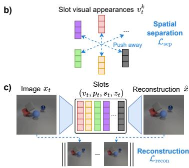

Figureure 2 · : Overview of STAITUSFig. 2: Overview of STAITUS. Given a frame $x _ { t }$ , an encoder extracts dense features $h _ { t }$ , which are grouped by a recurrent module into disentangled slot representations consisting of position $\left( { p _ { t } } \right)$ , scale $\left( { { s } _ { t } } \right)$ , and visual appearance $\left( v _ { t } \right)$ components. A learned gating mechanism $G _ { \mathrm { g a t e } }$ determines slot activation $z _ { t }$ dynamically adapting the number of active slots over time. Each active slot is decoded into an image $\bar { \boldsymbol { x } } _ { t } ^ { k }$ and an alpha mask $\alpha _ { t } ^ { k }$ . The final reconstruction $\hat { x } _ { t }$ is obtained by compositing all decoded slots.这张图概括 Rethinking Object-Centric Representations for Video 的整体方法流程。阅读时先看模块之间传递的训练信号，再看作者如何把目标拆成可优化的子问题。

Figureure 3 · : Illustration of the training objectivesFig. 3: Illustration of the training objectives. a) Temporal alignment loss $\mathcal { L } _ { \mathrm { t i m e } }$ en courages consistent slot appearance across consecutive frames. b) Spatial separation loss $\mathcal { L } _ { \mathrm { s e p } }$ encourages distinct slot appearances $v _ { t } ^ { k }$ in embedding space. c) Reconstruc tion loss $\mathcal { L } _ { \mathrm { r e c o n } }$ drives scene decomposition by minimizing the error between the input frame $x _ { t }$ and its composited reconstruction $\hat { x } _ { t }$这张图来自论文 PDF 的结构化抽取。当前用于辅助理解 Rethinking Object-Centric Representations for Video 的方法或实验，请结合正文精读段落一起看。